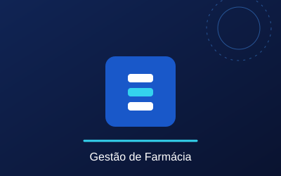
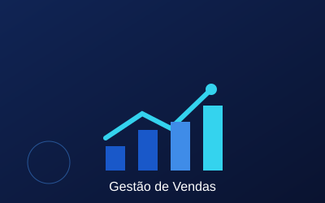
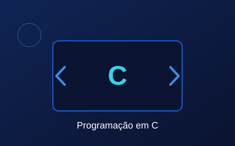

Sistema de Gestão de Farmácia
Sistema para cadastrar medicamentos, controlar estoque e registar vendas.
Tecnologia: C
Estado: Concluído
Trabalhos
Projetos desenvolvidos ou relacionados com a minha formação em Informática.

Sistema para cadastrar medicamentos, controlar estoque e registar vendas.
Tecnologia: C
Estado: Concluído

Projeto académico orientado para organização e gestão de produtos e vendas.
Tecnologia: C
Tipo: Projeto académico
Sistema pensado para gerir viaturas, clientes e processos de aluguer.
Tipo: Projeto académico
Saber mais
Conjunto de exercícios e programas desenvolvidos durante a formação académica.
Tecnologia: C
Estado: Em evolução